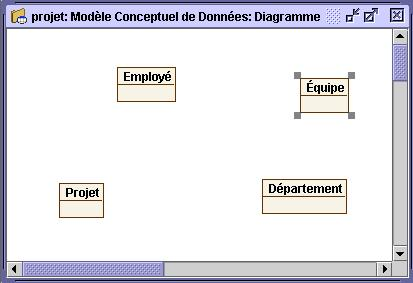
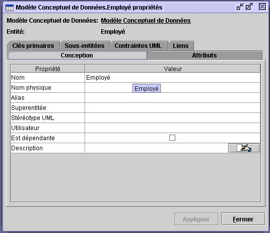

Ajouter des entitées et des attributs
 Ajouter des entitées
Ajouter des entitées
Une entité est une représentation de tout objet abstrait ou concret et dont les caractéristiques
sont décrites par les attributs.
Lorsque vous créez une entité, Open ModelSphere lui donne automatiquement
le nom par défaut Entité. Nous vous recommandons de nommer vos entitées aussitôt
que vous les avez créées. Ainsi, vous éviterez toute confusion lorsque le schéma se
complexifiera. Pour ce faire, utilisez la fonction d’édition graphique du contenu de l’entité.
Pour créer une entité :
- Choisissez l'outil Création d’entité dans la barre d’outils Création
et cliquez à l’intérieur de la fenêtre du diagramme.
- Double-cliquez sur le nom de l’entité, changez-le et appuyez sur Retour.
- Créez et nommez les entitées tel que démontré dans le diagramme suivant.

Pour créer plusieurs entitées
sans chaque fois sélectionner
l'outil, double-cliquez sur
l'outil Entité, il deviendra en
sélection permanente.
Quand vous aurez terminé,
double-cliquez l’outil maître.
Vous pouvez changer le nom d’une entité et ajouter d’autres informations dans la fenêtre
de Propriétés de cette entité. Cliquez à droite sur l’entité et choisissez Propriétés.

 Ajouter des attributs
Ajouter des attributs
Un attribut sert à caractériser une entité.
Typiquement, un attribut contient, au maximum, une valeur. Chaque table doit contenir
au moins un attribut. Open ModelSphere permet l’édition à même le graphique,
rendant ainsi possible l’ajout, la suppression ou la modification d’attributs.
N’oubliez pas, quand vous créez un attribut, Open ModelSphere lui assigne
automatiquement un nom par défaut : Attribut.
- Cliquez avec le bouton droit l’entité sur laquelle vous désirez ajouter des
attributs et sélectionnez Ajouter un attribut du menu contextuel.

Pour ajouter des attributs de façon répétitive, éditez le nom de l’attribut et appuyez sur CTRL et RETOUR simultanément
- Entrez un nom pour l’attribut, ceci écrasera le nom par défaut fourni par
l’application, et appuyez sur la touche Retour.
-
Ajoutez d'autres attributs de la même façon (tel qu’illustré dans le diagramme suivant).

Vous pouvez aussi modifier ou supprimer un attribut en employant la fonction d’édition
graphique de Open ModelSphere. Pour supprimer un attribut, cliquez sur
cet dernièr avec le bouton droit et choisissez Supprimer dans le menu contextuel.